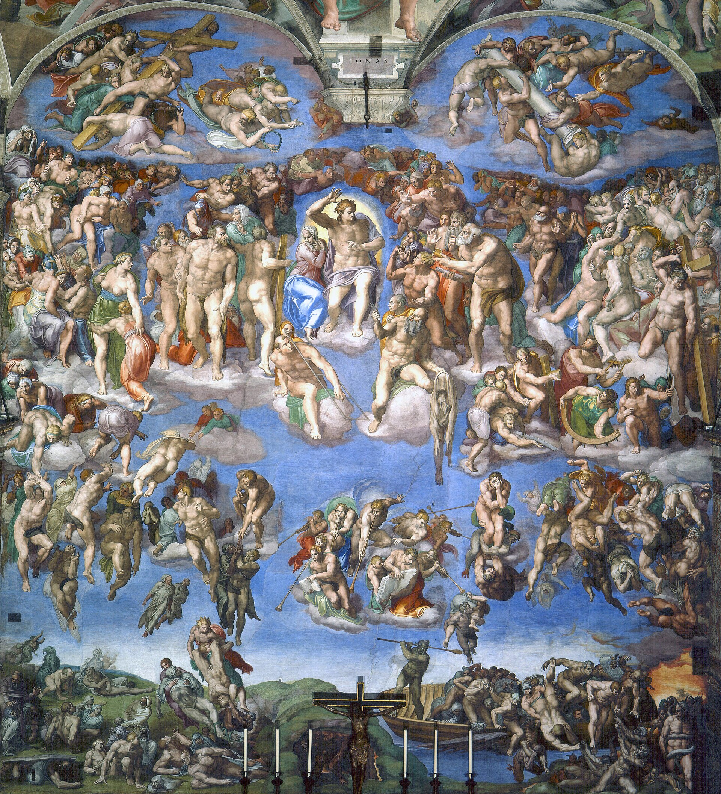
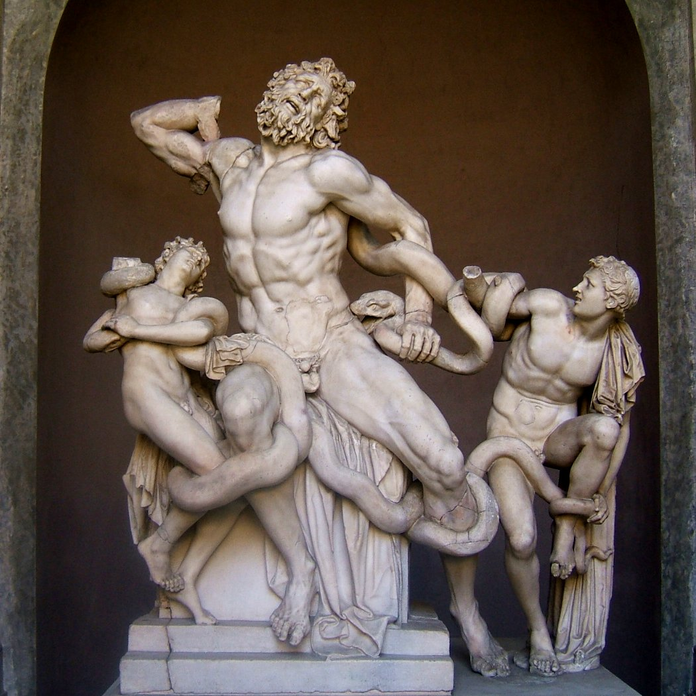
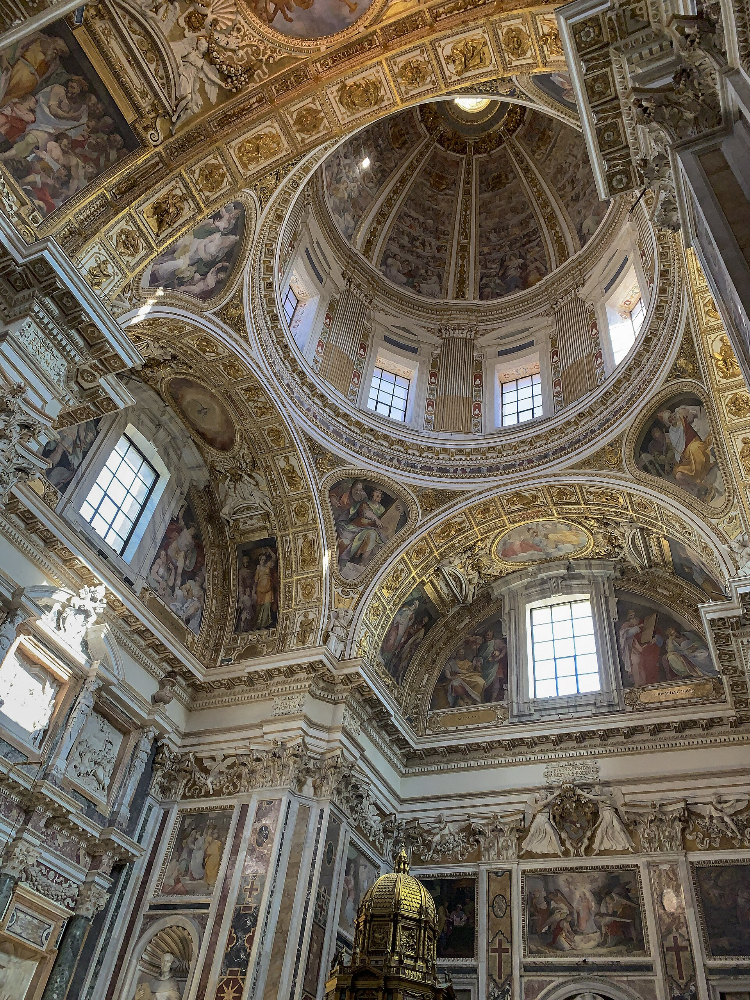

全球最大的博物馆群之一，从埃及木乃伊到现代艺术纵贯五千年。核心是拉斐尔房间与西斯廷教堂--教皇的私人书房与礼拜堂，装着文艺复兴两巨头隔空对话的巅峰之作。全程步行约 7 公里，请穿最舒服的鞋。
看点路线
Il Percorso
- 1早场 08:00 直奔西斯廷（顺时针反向游），或按官方顺序走到底
- 2松果庭院 -> 八角庭院（拉奥孔在此）-> 缪斯馆 -> 地图长廊
- 3拉斐尔房间（签字厅：《雅典学院》）
- 4西斯廷教堂（天顶 +《最后的审判》）--全程唯一不许拍照的展厅
- 5出西斯廷直通圣彼得大教堂（出口右侧通道，免二次安检）
重点展品
I Capolavori · 6 件长征补给点

《雅典学院》
教皇签字厅的整墙湿壁画：柏拉图与亚里士多德并肩走向观众，古希腊群哲汇聚一堂。拉斐尔在画里藏满彩蛋--柏拉图是达芬奇的脸，孤僻坐台阶的赫拉克利特是米开朗基罗，右下角直视观众的黑帽青年是拉斐尔自己。

西斯廷天顶《创世纪》
500 多平方米天顶、300 多个人物。亚当斜倚的慵懒与上帝扑面而来的动势之间那道空隙，是艺术史上最著名的 3 厘米--指尖将触未触的瞬间，神性与人性互相奔赴。仰头看 20 分钟，脖子会酸，这就是朝圣的体感。

《最后的审判》
祭坛整墙巨作，完成于天顶之后 25 年。圣母缩在基督身侧，圣徒拎着自己殉道的刑具，被剥皮的圣巴托罗缪手中那张人皮，据考证是米开朗基罗的自画像--一个老人对审判的全部愤怒与自嘲。

《拉奥孔》群雕
特洛伊祭司拉奥孔因警告“小心希腊人的礼物”而触怒雅典娜，与两个儿子被海蛇绞杀。1506 年在罗马出土时米开朗基罗亲临现场--这尊扭曲的人体直接改写了文艺复兴后期雕塑的审美，教皇尤利乌斯二世立刻买下。
地图长廊
120 米长廊两侧 40 幅巨幅地图，把 16 世纪的意大利从阿尔卑斯画到西西里，精确得能让现代地理学家核对出海岸线变迁。天花板镀金透视幻觉画让你觉得屋顶是敞开的--站在中段抬头，是全馆最被低估的震撼。

西斯廷教堂整体
墙面的早期壁画出自波提切利、吉兰达约等一众大师（是的，波提切利也画过湿壁画），天顶与祭坛墙则属于米开朗基罗--一间屋子浓缩了文艺复兴全明星赛。这里也是教皇选举（秘密会议）的举办地：烟囱就架在屋顶。
历史故事
Le Storie
壹被逼出来的天顶画
1508 年，教皇尤利乌斯二世原本让米开朗基罗去雕自己的陵墓（报酬可观），后来听信“谗言”改派他画西斯廷天顶。米开朗基罗自认是雕塑家，写信吐槽：“绘画不是我的行当。”--然后一画四年。
他几乎独自仰头作画（传说助手刚培训好就被他辞退），颜料滴进眼睛，颈椎受损，以致读信都要把信举过头顶。他在一首自嘲诗里写：胡子朝天，脖子折进肚子，“我的画笔在我脸上方抖，把滴落的颜色洒成华丽的地板”。
1512 年 11 月 1 日揭幕，罗马万人空巷。拉斐尔（正在隔壁画自己的房间）看完只留下一句：“感谢上天让我生在这个时代。”--对手的致敬，比历史学家的评语更有分量。
贰拉斐尔房间的密码
教皇尤利乌斯二世的私人书房（签字厅）四面墙，拉斐尔各画了一个知识门类：神学、哲学、诗学与法学。《雅典学院》占据“哲学”一墙--把异教哲人请进教皇的书房，本身就是文艺复兴的人文宣言。
画中彩蛋至今仍在被解密：前景孤僻坐者赫拉克利特（米开朗基斯的脸）是 1511 年后补的--那时拉斐尔刚看完未完工的西斯廷，被震撼到立刻在自家墙上给对手加了个“客串席位”。
叁《最后的审判》与那头驴耳朵
1536 年，61 岁的米开朗基罗被教皇保罗三世召回，在完工 25 年的天顶对面画《最后的审判》。他把教皇的司仪长比亚焦·达·切塞纳画成了地狱判官弥诺斯--驴耳、蛇缠身，因为他批评壁画里裸体太多“有伤风化”。
司仪长向教皇抗议，保罗三世的回答成为艺术史上最著名的一句甩锅：“地狱不归我管。”
后来的教皇还是给裸体们画上了遮羞布（史称“穿裤子运动”，braghettone），但那头驴耳朵留了下来--一个画家对审查制度最漫长的报复，至今仍在西斯廷墙上执行。
参观贴士
Consigli Pratici
- 西斯廷教堂内禁止拍照，安保密度全馆最高，别试
- 早 8 点第一场直奔西斯廷 = 独享 10 分钟（逆向走法）；常规顺序则把西斯廷留到最后
- 出口双螺旋坡道与邮局（梵蒂冈邮戳）值得停留 10 分钟
- 语音导览 €8 性价比高，展线长容易迷失叙事
- 与圣彼得大教堂同日游：出口右转免安检通道直达教堂（周三上午因教皇接见可能关闭）
- 每月最后一个周日免费但不预约，队伍凌晨就开始排--免费是这个星球上最贵的东西
顺路同游
Da Non Perdere